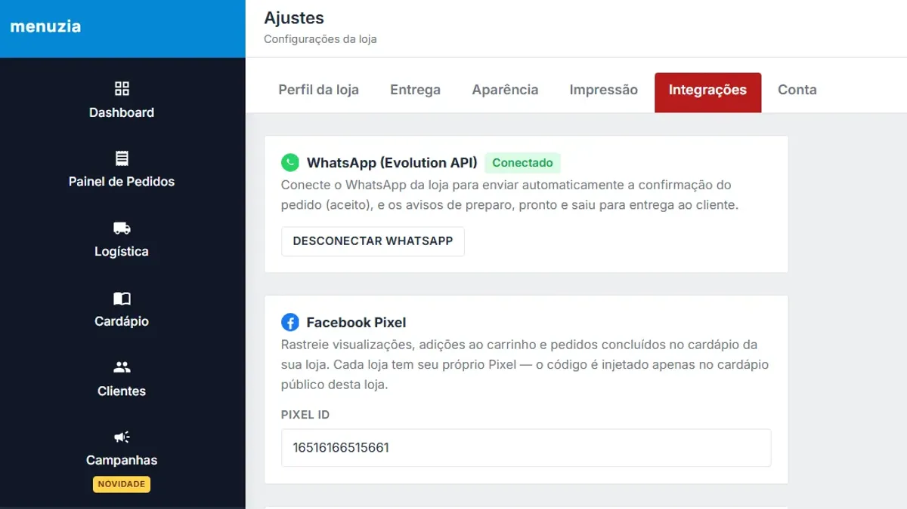

Cardápio digital integrado ao iFood e 99Food: todos os pedidos num painel só

Quem vende em mais de um aplicativo conhece a cena: um tablet para o iFood, outro para o 99Food, o celular apitando com pedido do WhatsApp — e alguém redigitando tudo na comanda da cozinha. Um cardápio digital integrado ao iFood junta tudo isso num lugar só.
O que a integração faz
- Pedidos do iFood, 99Food e aiqfome entram no mesmo painel de pedidos do seu cardápio digital, do PDV e das mesas
- Mesma impressora: todos os pedidos saem na cozinha no mesmo formato
- Uma fila de produção só — a cozinha prepara na ordem real
- Faturamento consolidado para comparar quanto vem de cada canal
A estratégia: app como vitrine, link como canal
O marketplace é bom para ser encontrado por quem ainda não te conhece. O problema é depender dele para tudo: a comissão incide em cada pedido, inclusive na recompra do cliente que já é seu. O caminho que dá mais margem:
- Continue no iFood e no 99Food para ganhar cliente novo.
- Coloque um QR Code na embalagem levando para o seu cardápio próprio, com um cupom de primeira compra.
- Quem pede no seu link entra na sua base e passa a receber campanhas no WhatsApp.
- A recompra acontece no canal sem comissão.
Comparativo completo em cardápio digital x 99Food e o passo a passo em como sair do iFood e vender direto.
Outras integrações
- Mercado Pago: Pix e cartão online no checkout, direto na sua conta
- Facebook Pixel e API de Conversões (Meta): saiba quais anúncios geram pedidos (veja como fazer anúncios para delivery)
- Google Analytics / Tag Manager: acessos e conversões no GA4
- WhatsApp: robô, notificações de status e disparos
Quanto custa
R$67/mês fixo, com as integrações inclusas e sem comissão sobre os pedidos do seu cardápio. A comissão do marketplace continua sendo cobrada pelo marketplace nos pedidos feitos lá — por isso vale levar a recompra para o canal próprio.
Buscas relacionadas
O que donos de restaurante e delivery pesquisam antes de contratar — cada busca leva para a página que responde a ela:
Perguntas frequentes
O Menuzia integra com o iFood?
Sim. Os pedidos do iFood, do 99Food e do aiqfome entram no mesmo painel de pedidos do Menuzia e saem na mesma impressora da cozinha.
Preciso sair do iFood para usar o cardápio digital?
Não. A recomendação é usar o marketplace como vitrine para cliente novo e o cardápio próprio para a recompra, sem comissão.
A integração cobra taxa por pedido?
O Menuzia não cobra comissão: são R$67/mês fixos. A comissão dos pedidos feitos dentro do iFood ou do 99Food continua sendo cobrada por eles.
Os pedidos do marketplace imprimem automaticamente?
Sim. Todos os pedidos, de qualquer canal, saem na mesma impressora no mesmo formato.
Integra com Facebook Pixel e Google Analytics?
Sim. Há integração com Facebook Pixel, API de Conversões da Meta e Google Analytics/Tag Manager para medir quais anúncios geram pedidos.
Pare de pagar comissão por pedido
Cardápio digital próprio por R$67/mês fixo. Nossa equipe configura pra você e o suporte está incluso.
Criar Meu Cardápio Agora →